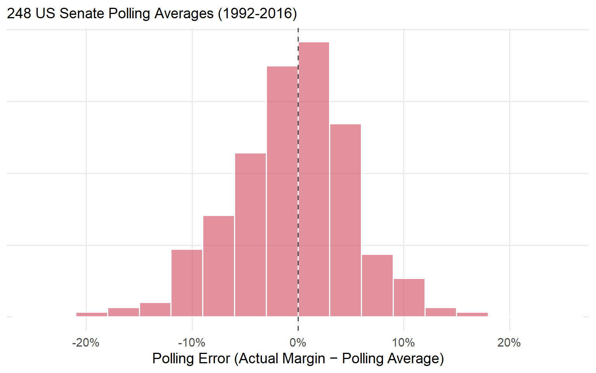
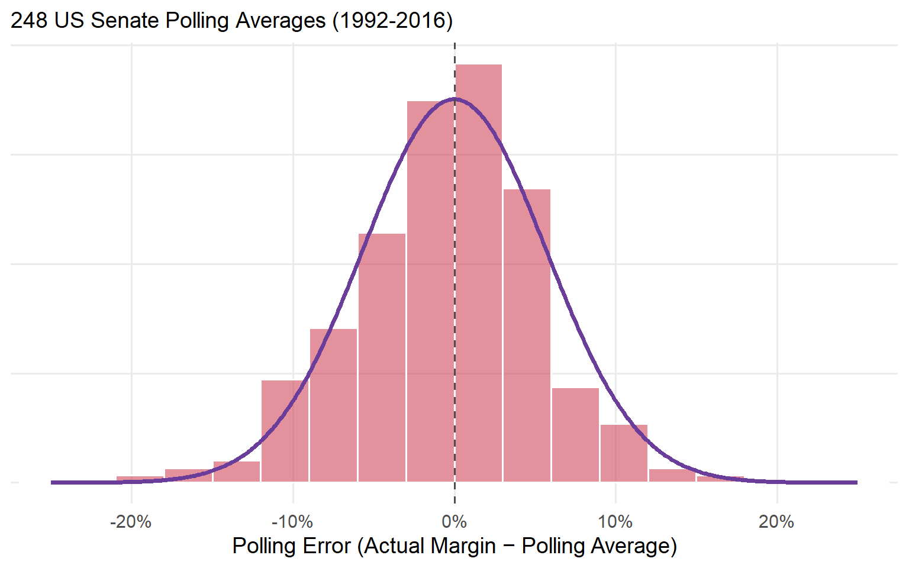
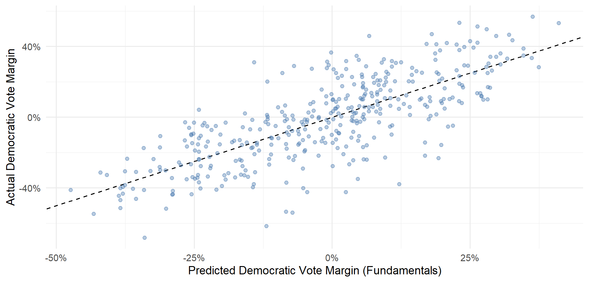
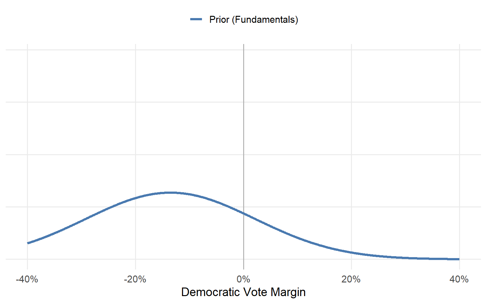
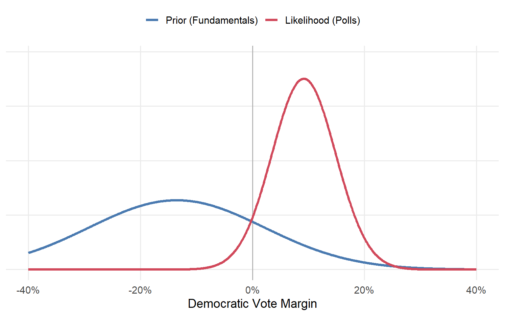
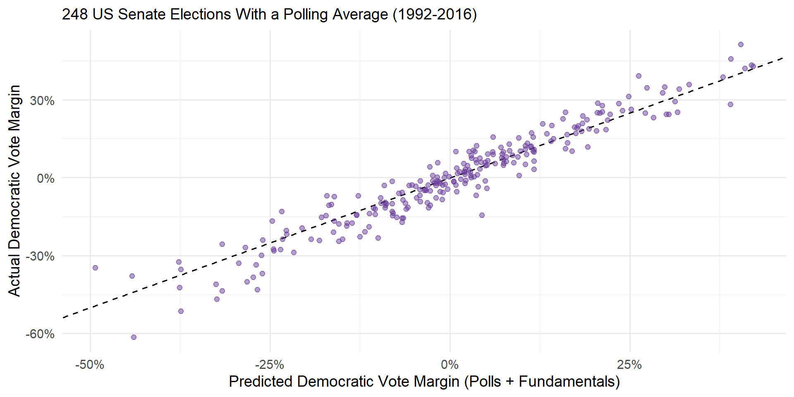

| Model | Elections | Average Error | Brier |
|---|---|---|---|
| President (June Approval + Q2 GDP) | 11 | 3.6 pts | 0.099 |
| Senate (PVI + Experience) | 397 | 12.2 pts | 0.129 |
POLS 3220: How to Predict the Future
Over the past two weeks, we’ve approached election forecasting from two perspectives:
The Polls: unbiased, but much noisier than classical theory predicts.
The Fundamentals: political and economic indicators historically correlated with election outcomes.
Today, we combine them into a single forecasting model for US Senate elections.
To do so, we’ll need the help of an old friend: Bayes Rule.

Polling averages are unbiased, with errors that fall on a bell curve (SD = 5.7 points).

Last time, we built a fundamentals model of presidential elections using June presidential approval and Q2 GDP growth.
That model had an average error of about 3.6 percentage points.
Can we do the same thing for Senate elections?
The problem here is a lack of good data: there’s no “Senator approval rating” or “state GDP growth” dataset going back decades.
But there are still some useful predictors:
The Cook Political Report’s Partisan Voting Index (PVI): how much more Democratic or Republican a state votes than the country as a whole.
Whether each Senate candidate has previous political experience (Carson et al. 2010).
Fitting a linear model to 397 Senate elections (1992-2016) yields this equation:
\[ \begin{aligned} \text{Democratic Margin} = -0.1 & + 1.2 \times \text{ PVI } \\ & + 18.0 \times \text{ Democrat Experienced } \\ & - 15.3 \times \text{ Republican Experienced } \end{aligned} \]
Every point of PVI is worth about 1.2 points of vote margin.
An experienced Democrat gains about 18 points; an experienced Republican, about 15 points.

| Model | Elections | Average Error | Brier |
|---|---|---|---|
| President (June Approval + Q2 GDP) | 11 | 3.6 pts | 0.099 |
| Senate (PVI + Experience) | 397 | 12.2 pts | 0.129 |
The Senate fundamentals model’s average error is about 12 points.
That’s about 3 times worse than the presidential model, and about 3 times worse than the polling averages (4.3 points).
Discuss: Why might Senate fundamentals be so much weaker than presidential fundamentals?
\[ \text{Posterior Odds} = \text{Prior Odds} \times \text{Strength of Evidence} \]
Start with a prior: what you believed before seeing the evidence.
Ask how much more likely the evidence is under one possibility than another: the strength of evidence.
Multiply to get your posterior: what you believe after seeing the evidence.
West Virginia, 2018. Before looking at any polls, the fundamentals predict R+13.5.

The polling average in the final month was D+9.2.

{
const r = transpose(races18).find(d => d.raceid === race);
const pr = grid.map(x => dn(x, r.prior, consts.sd_prior));
const lk = grid.map(x => dn(r.poll, x, consts.sd_poll)); // likelihood of the observed polls
const prod = pr.map((p, i) => p * lk[i]);
const Z = d3.sum(prod) * 0.1;
const post = prod.map(p => p / Z);
const pm = d3.sum(grid.map((x, i) => x * post[i] * 0.1));
const pwin = d3.sum(grid.map((x, i) => (x > 0 ? post[i] * 0.1 : 0)));
const rows = (arr, key) => grid.map((x, i) => ({x, y: arr[i], key}));
const data = [...rows(pr, "Prior (fundamentals)"), ...rows(lk, "Likelihood (polls)"), ...rows(post, "Posterior")];
// one row per margin for the hover readout (every 0.5 pts, within the visible range)
const hover = grid.map((x, i) => ({x, pr: pr[i], lk: lk[i], prod: prod[i], post: post[i]}))
.filter((d, i) => i % 5 === 0 && Math.abs(d.x) <= 40);
const at = (key) => Plot.pointerX({x: "x", y: key, fill: col[{pr: "prior", lk: "poll", post: "post"}[key]], r: 5});
return html`<div>${Plot.plot({
width: 900, height: 400, style: {fontSize: "15px"}, marginBottom: 50,
x: {label: "Dem margin (pts)", labelAnchor: "center", labelOffset: 42, domain: [-40, 40]},
y: {label: null, ticks: []},
color: {domain: ["Prior (fundamentals)", "Likelihood (polls)", "Posterior"],
range: [col.prior, col.poll, col.post], legend: true},
marks: [
Plot.areaY(rows(post, "Posterior"), {x: "x", y: "y", fill: col.post, fillOpacity: 0.15}),
Plot.line(data, {x: "x", y: "y", stroke: "key", strokeWidth: 2.5}),
Plot.ruleX([0], {stroke: "#999"}),
// hover: rule + a dot on each curve + the multiplication
Plot.ruleX(hover, Plot.pointerX({x: "x", stroke: "orange", strokeWidth: 1.5})),
Plot.dot(hover, at("pr")), Plot.dot(hover, at("lk")), Plot.dot(hover, at("post")),
Plot.tip(hover, Plot.pointerX({x: "x", y: d => Math.max(d.pr, d.lk, d.post), fontSize: 14,
title: d => `At ${fmt(d.x)}\nprior ${d.pr.toFixed(4)} × likelihood ${d.lk.toFixed(4)}\n= ${d.prod.toExponential(2)}\n→ posterior ${d.post.toFixed(4)} (rescaled)`}))
]
})}
<p style="font-size: 0.72em; margin: 0">
Prior ${fmt(r.prior)} · Polls ${fmt(r.poll)} (${r.num_polls} polls) · <b>Posterior ${fmt(pm)}</b>
· P(Democrat wins) = <b>${(pwin * 100).toFixed(0)}%</b></p></div>`;
}
The combined model has an average error of 4.2 percentage points.
It correctly calls the winner in 92.3% of elections from 1992-2016.
But the true test of a model is whether it can accurately forecast out-of-sample.
{
const r = transpose(races18).map(d => ({...d, race: d.raceid.replace("-2018", "")}))
.sort((a, b) => b.post - a.post);
const has = (k) => show.includes(k);
return Plot.plot({
width: 900, height: 560, style: {fontSize: "14px"}, marginLeft: 120, marginBottom: 45,
x: {label: "Predicted Democratic vote margin (pts)", labelAnchor: "center", labelOffset: 38,
domain: [-70, 70], grid: true},
y: {label: null, domain: r.map(d => d.race)},
marks: [
Plot.ruleX([0], {strokeDasharray: "4,4"}),
has("Posterior ± 95%") ? Plot.ruleY(r, {y: "race", x1: d => d.post - 1.96 * d.post_sd,
x2: d => d.post + 1.96 * d.post_sd, stroke: col.post, strokeOpacity: 0.35, strokeWidth: 5}) : null,
has("Fundamentals") ? Plot.dot(r, {y: "race", x: "prior", stroke: col.prior, strokeWidth: 2, r: 4.5}) : null,
has("Polls") ? Plot.dot(r.filter(d => typeof d.poll === "number"), {y: "race", x: "poll", fill: col.poll,
symbol: "diamond", r: 5}) : null,
has("Posterior ± 95%") ? Plot.dot(r, {y: "race", x: "post", fill: col.post, r: 4.5}) : null,
has("Actual") ? Plot.dot(r, {y: "race", x: "actual", stroke: col.actual, symbol: "times", r: 6, strokeWidth: 2.5}) : null,
Plot.tip(r, Plot.pointerY({y: "race", x: "post", fontSize: 14, title: d =>
`${d.raceid}\nfundamentals ${fmt(d.prior)}\npolls ${typeof d.poll === "number" ? fmt(d.poll) + " (" + d.num_polls + " polls)" : "none"}\nposterior ${fmt(d.post)}\nactual ${fmt(d.actual)}`}))
]
});
}The polls + fundamentals model correctly predicted all but two of the 2018 Senate elections, with an average error of 3.1 percentage points.
By comparison, if you had been looking at the polls alone, you would have incorrectly called three elections.
It’s somewhat surprising that combining two noisy predictors (polls: 3.6% error, fundamentals: 7.3% error) yields a pretty good model (polls + fundamentals: 3.1% error)!
But it follows the basic logic of the wisdom of crowds and Bayesian updating.
Both polls and fundamentals provide an imperfect glimpse at the state of a race.
Combining the two perspectives yields a better forecast than either alone (Chen et al. 2023).